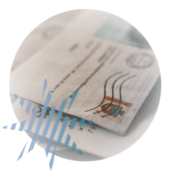
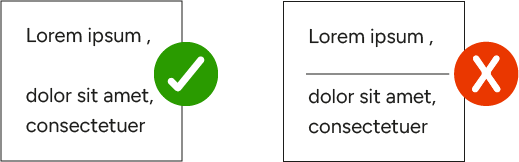
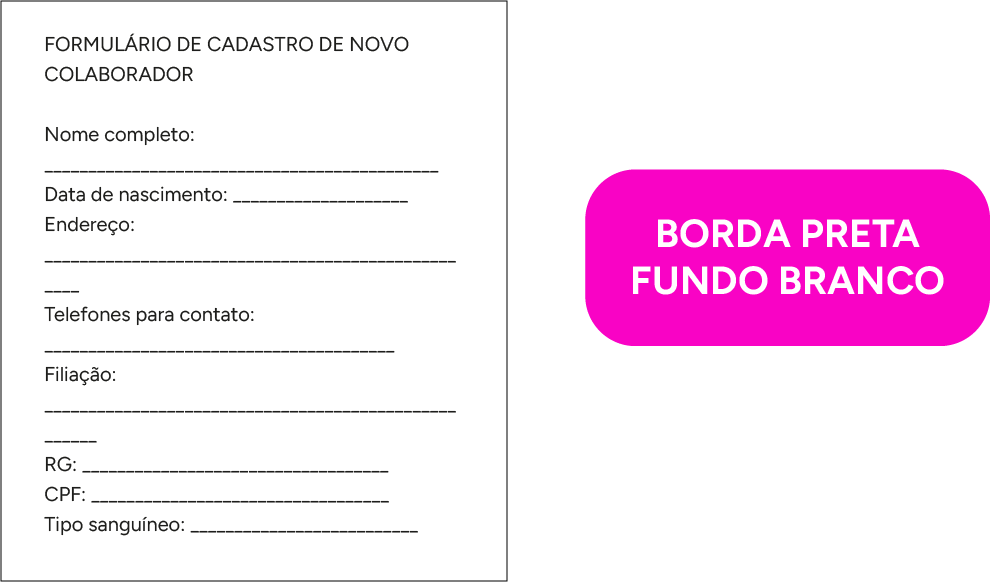
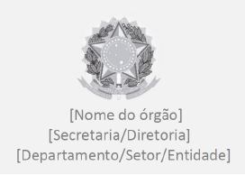
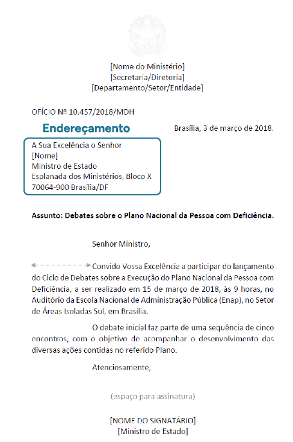
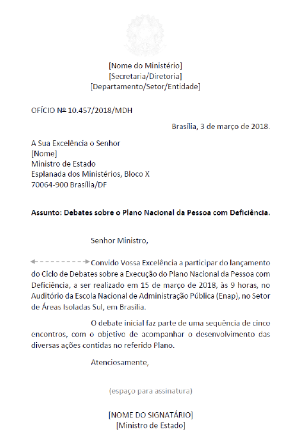
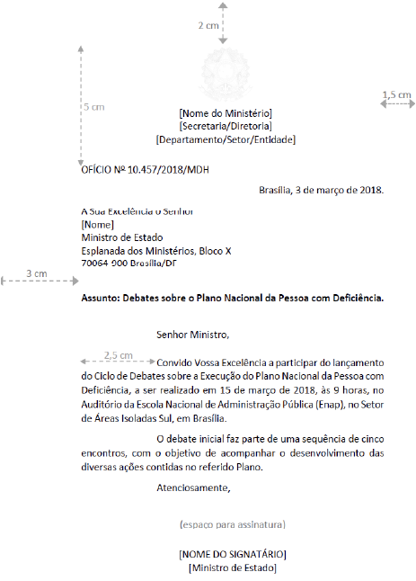

Redação empresarial: tipos (e-mails, formulários, cartas, memorandos, ofícios, protocolos, relatórios, entre outros) e características (tamanho, estrutura, fluidez e objetivos)
Características similares: redação empresarial e oficial
Com relação à redação no âmbito organizacional, é necessário destacar que existem dois tipos de redação sobre os quais o profissional de secretariado deve ter conhecimento e dos quais deve ter domínio: a empresarial e a oficial.
A redação empresarial abrange toda a redação que é produzida em empresas privadas, ou seja, a escrita feita nos documentos emitidos por organizações privadas. A redação oficial, por sua vez, está presente em toda a documentação produzida em organizações públicas.
Design/diagramação: criar duas imagens ou uma para representar a ilustração abaixo
Portanto, um ofício faz parte da redação oficial, e não da empresarial.
Existem características similares entre o texto empresarial e o oficial que são muito importantes, e é essencial que você as observe ao redigir esses textos. Veja quais são essas características:
Clique ou toque para visualizar o conteúdo.
Clareza
É preciso observar, já no momento da leitura, se é possível entender o texto. Um texto claro é aquele que possibilita a compreensão imediata por parte do leitor. Para que seus textos sejam claros, evite redigi-los de forma obscura, ou seja, de difícil ou nenhuma compreensão.
Design/diagramação: inserir imagem/ilustração de uma pessoa realizando uma leitura.
Uma boa técnica para verificar se seu texto está realmente claro é colocar-se no lugar do leitor. Deve-se evitar ruídos na comunicação para emitir ideias com clareza. Para isso, considere que o leitor pode não conhecer todas as palavras utilizadas no texto e tente ser o mais claro possível, observando sempre a norma-padrão da língua portuguesa.
Para redigir textos claros, evite utilizar linguagem técnica, a não ser que você tenha certeza de que seu destinatário entenderá. Para auxiliar em sua redação, dê preferência a palavras simples e adequadas ao contexto e, além disso, verifique se o texto não ficou ambíguo.
Todas essas dicas ajudarão você a escrever uma redação clara e de fácil entendimento por parte do seu leitor.
Precisão
A precisão é um complemento da clareza. De acordo com o Manual de Redação da Presidência da República (Brasil, 2018, p. 17), são características da precisão:
Articulação da linguagem comum ou técnica para a perfeita compreensão da ideia veiculada no texto
Manifestação do pensamento ou da ideia com as mesmas palavras, evitando o emprego de sinonímia com propósito meramente estilístico
Escolha de expressão ou palavra que não confira duplo sentido ao texto
Sendo assim, faça a revisão de seu texto para que ele seja preciso, ou seja, que consiga alcançar o entendimento do leitor. Para isso, analise se o leitor tem conhecimento de todas as palavras utilizadas e, se for necessário, seja mais específico, explicando algum termo mais técnico, por exemplo.
Objetividade
O texto objetivo é aquele que passa a mensagem diretamente, sem repetições, sem inserção de termos ou elementos que causem confusão ao leitor. A objetividade é alcançada quando você analisa as ideias primárias e as secundárias do assunto de que tratará. As ideias primárias devem ser expostas, enquanto as secundárias só devem ser inseridas no texto se acrescentarem informações relevantes (informações não relevantes podem ser chamadas de ideias terciárias).
De acordo com Gold (2017, p. 50), existem técnicas para obter objetividade nos textos. Observe:
Figura 1 – Técnicas para construir um texto objetivo
Fonte: Adaptado de Gold (2017, p. 50)
Na primeira etapa, será preciso identificar o que você deve dizer ao destinatário de seu texto. Sendo assim, o assunto da mensagem será sua ideia principal. A segunda etapa é a identificação das ideias secundárias, que são tudo aquilo que precisa acompanhar a ideia principal para que ela seja entendida. Para que você consiga entender quais são as ideias secundárias, deve questionar o que poderá dizer ao seu destinatário para ajudar no entendimento do assunto principal. Para identificar as ideias terciárias, você precisa ler e reler o texto, suprimindo aquilo que foi dito além do necessário, pois ideias terciárias são palavras ou frases desnecessárias no texto.
Concisão
A concisão é outro aspecto muito relevante na redação de textos empresariais e oficiais, pois ela tem o papel de reduzir o tamanho das mensagens. Reduzir o tamanho dos textos é relevante porque, quanto mais curto for o texto, mais rápido ele será lido, desde que seja inteligível.
A concisão é importante para que o leitor consiga compreender a mensagem. No entanto, você deve prestar atenção: isso não quer dizer que você pode escrever apenas algumas palavras soltas e finalizar o texto. Você deve passar a mensagem de forma que o leitor entenda tudo o que você quis dizer, mas de forma sintetizada, tomando cuidado para que seu texto não fique sem sentido ou que não englobe os demais elementos citados aqui.
Conforme Gold (2017, p. 62), as principais características da concisão são:
Escrever o máximo de informações com o mínimo de palavras
Eliminar os clichês do texto
Eliminar as redundâncias e as ideias excessivas
Lembre-se sempre de ler e reler seu texto, pois isso ajuda a perceber e a corrigir qualquer deslize, deixando o texto adequado e de fácil entendimento.
Coesão e coerência
Coesão e coerência textual são assuntos comuns no que se refere à redação textual. Nas redações empresarial e oficial, isso não poderia ser diferente, uma vez que coesão e coerência são a base para redigir bons textos.
A coesão pode ser entendida como a articulação entre as palavras que resultam em um texto. Além disso, é possível dizer que a coesão é o conjunto de palavras que estão em uma sequência e que dão harmonia ao texto, transformando-o em uma unidade.
De acordo com Koch (2014, p. 45), “a coesão é o fenômeno que diz respeito ao modo como os elementos linguísticos presentes na superfície textual se encontram interligados entre si, por meio de recursos também linguísticos, formando sequências veiculadoras de sentidos”.
A coerência está relacionada ao sentido do texto, pois é necessário que exista conexão entre palavras, frases e parágrafos. Essa conexão é concebida por meio de conectores no texto, que dão sentido às ideias. Conforme Koch (2014, p. 52), a coerência é o resultado de uma construção feita pelos interlocutores, em uma situação de interação dada pela atuação conjunta de uma série de fatores de ordem cognitiva, sociocultural e interacional.
Veja os principais conectivos que ajudam a construir o sentido no texto e seus respectivos significados:
Ideias
Conectivos simples
Conectivos compostos
Causa
porque, pois, por, porquanto, dado, visto, como
por causa de, devido a, em vista de, em virtude de, em face de, em razão de, já que, visto que, uma vez que, dado que
Consequência imprevista
tão... que, tal... que, tamanho... que, tanto... que
de modo que, de forma que, de maneira que, de sorte que, tanto que
Consequência lógica
logo, assim, portanto, pois
assim sendo, por conseguinte
Finalidade
para, porque
para que, a fim de que, a fim de, com o propósito de, com a intenção de, com o fito de, com o intuito de
Condição
se, caso, mediante, sem, salvo
contanto que, a não ser que, a menos que, exceto se
Oposição suave
mas, porém, contudo, todavia, entretanto
no entanto
Oposição
embora, conquanto, muito embora
apesar de, a despeito de, não obstante, malgrado a, sem embargo de, se bem que, mesmo que, ainda que, em que pese, posto que, por mais que, por muito que
Comparação
como, qual
do mesmo modo que, como se, assim como, tal como
Tempo
quando, enquanto, apenas, ao, mal
logo que, antes que, depois que, desde que, cada vez que, todas as vezes que, sempre que, assim que
Proporção
à proporção que, à medida que
Conformidade
conforme, segundo, consoante, como
de acordo com, em conformidade com
Alternância
ou
nem... nem, ou... ou, ora... ora, quer... quer, seja... seja
Adição
e, nem
Restrição
que
não só... mas também, tanto... como, não apenas... como
Tabela 1 – Principais conectivos e seus significados
Fonte: Gold (2017, p. 97)
Impessoalidade
A impessoalidade determina que o texto deve ser escrito sem que haja as impressões daquele que o está elaborando. Essa característica é essencial na redação oficial e pode ser utilizada na redação empresarial. Na redação oficial, o texto está sendo elaborado em nome de algum órgão público ou de uma organização privada, por isso é obrigatório que seja impessoal. Nas organizações privadas, a redação produzida não tem obrigatoriedade de ter impessoalidade.
Com relação aos assuntos tratados no âmbito oficial, o Manual de Redação da Presidência da República (Brasil, 2018, p. 20) traz o seguinte:
Da ausência de impressões individuais de quem comunica: embora se trate, por exemplo, de um expediente assinado por chefe de determinada seção, a comunicação é sempre feita em nome do serviço público. Obtém-se, assim, uma desejável padronização, que permite que as comunicações elaboradas em diferentes setores da administração pública guardem entre si certa uniformidade.
Da impessoalidade de quem recebe a comunicação: ela pode ser dirigida a um cidadão, sempre concebido como público, ou a uma instituição privada, a outro órgão ou a outra entidade pública. Em todos os casos, há um destinatário concebido de forma homogênea e impessoal.
Do caráter impessoal do próprio assunto tratado: se o universo temático das comunicações oficiais se restringe a questões que dizem respeito ao interesse público, é natural não caber qualquer tom particular ou pessoal.
Formalidade e padronização
Na redação oficial, a formalidade exigida e as regras de forma estão relacionadas aos cargos. Além disso, essa formalidade é necessária em todos os documentos emitidos tanto por meio físico quanto por meio digital, incluindo e-mail.
Na redação oficial, existem formas de tratamento para os cargos, pois eles também obedecem a uma hierarquia. Com relação à padronização, deve-se observar as características de cada tipo de documento, pois cada um deles tem uma formatação.
Design/diagramação: inserir na lateral do texto imagem /ilustração que remeta papelaria.
Outra questão importante aqui é o fato de que é necessário ter o cuidado de não cometer erros de digitação, além de também utilizar a papelaria adequada para cada tipo de documento. Saiba que muitas organizações privadas trabalham a gestão da marca, que engloba toda a questão de papelaria. Isso quer dizer que essas empresas têm uma padronização de suas folhas timbradas, bem como envelopes e outros tipos de documentos.
Com isso, é necessário respeitar os padrões concebidos para esses tipos de documento. Também é necessário obedecer às regras de utilização de logotipos na padronização e nos critérios da marca, pois isso interfere nos documentos das organizações.
Portanto, observe e questione se a organização na qual você trabalha, seja ela pública, seja privada, utiliza esses padrões e dispõe de normas para utilização de material timbrado. Agindo assim, você estará respeitando as normas internas da organização e reduzindo as chances de utilizar o logotipo de forma incorreta.
Uso da norma-padrão da língua portuguesa
É importante que todos os tipos de documentos sejam redigidos de acordo com a norma-padrão e culta da língua portuguesa. Sendo assim, é essencial que o profissional de secretariado conheça as regras gramaticais para que consiga redigir textos de qualidade. Além disso, é preciso evitar a utilização de gírias e jargões.
É recomendado que todo profissional que elabora textos, além de ter conhecimento da norma-padrão, faça o uso de dicionários e livros e faça consultas em sites para auxiliar na redação. É importante salientar que existem dicionários de regência verbal e nominal, além dos dicionários de sinônimos.
Lembre-se de sempre fazer uma revisão de seu texto para evitar erros de digitação e gramaticais e garantir que seu texto esteja de acordo com todos os aspectos citados anteriormente.
A seguir, você estudará os dois tipos de redação (empresarial e oficial), bem como os documentos que são produzidos por cada um deles. É importante ressaltar que a nomenclatura da documentação é bem similar e, muitas vezes, o que as distingue são a formatação e algumas questões de conteúdo.
Redação empresarial
A redação empresarial é utilizada em todos os documentos elaborados por empresas privadas, destinados aos clientes tanto externos quanto internos.
Tipos de redação empresarial
Na organização, o e-mail é utilizado para se comunicar com clientes internos e externos por meio eletrônico.
É importante ressaltar que, ao utilizar o e-mail para se comunicar com os clientes externos, deve-se manter a formalidade e utilizar a norma-padrão da língua portuguesa. Por ser um meio de comunicação muito utilizado, é comum pensar que não é necessário manter a linguagem formal, mas sempre se deve lembrar de que e-mails corporativos fazem parte da redação empresarial.
É possível que haja exceções, pois você pode trocar mensagens um pouco mais informais com clientes com quem tem mais contato e fala diariamente, por exemplo. Entretanto, é bom ter o cuidado de não exagerar, porque o e-mail que você está utilizando é o corporativo.
Existem também situações em que você precisa encaminhar uma correspondência via correio eletrônico. Então, redija o e-mail, assim como a correspondência encaminhada em anexo, utilizando a norma-padrão da língua portuguesa.
Isso também é válido para os clientes internos da organização. Por se tratar de colegas trocando e-mails, por exemplo, a linguagem pode ser mais informal. Entretanto, se houver algum comunicado ou memorando interno, é de extrema importância que a formalidade na escrita seja respeitada.
Então, o correto é utilizar o bom senso e não enviar por e-mail mensagens que não forem relativas aos assuntos organizacionais.
Clique ou toque para visualizar o conteúdo.
Desing/ diagramação: conseguimos incluir a página de e-mail para o fundo do exemplo?
Boa tarde, pessoal!
Lembramos que a reunião de planejamento mensal do setor de vendas será realizada no dia 01/04/2025, às 14h, na sala 201. Por favor, enviem assuntos para a pauta até o dia 31/03/2025.
Um abraço,
Paula Campos
Gerente de vendas
Neste exemplo, o início do texto e o fechamento são mais informais. Isso é permitido porque é a gerente enviando e-mail para sua equipe, com quem convive diariamente.
Desing/ diagramação: conseguimos incluir a página de e-mail para o fundo do exemplo?
Prezados clientes,
Temos o prazer de convidá-los para o coquetel de lançamento da nossa nova linha de produtos orgânicos. A recepção acontecerá no dia 18 de abril de 2025, às 19h30, no saguão da empresa Orgânica Oeste Ltda.
Solicitamos a gentileza de confirmar sua presença pelo e-mail organicaoesteltda@organicaoesteltda.com ou pelo WhatsApp (45) xxxxx-xxxx.
Atenciosamente,
Saulo Sampaio
Gerente de marketing
Nesse outro exemplo, por se tratar de clientes externos, o texto é redigido com formalidade. Perceba que a confirmação da presença pode ser via WhatsApp, que, apesar de muito utilizado para mensagens pessoais, tornou-se uma ferramenta de uso corporativo.
Boa tarde, pessoal!
Lembramos que a reunião de planejamento mensal do setor de vendas será realizada no dia 01/04/2025, às 14h, na sala 201. Por favor, enviem assuntos para a pauta até o dia 31/03/2025.
Um abraço,
Paula Campos
Gerente de vendas
Neste exemplo, o início do texto e o fechamento são mais informais. Isso é permitido porque é a gerente enviando e-mail para sua equipe, com quem convive diariamente.
Desing/ diagramação: conseguimos incluir a página de e-mail para o fundo do exemplo?
Prezados clientes,
Temos o prazer de convidá-los para o coquetel de lançamento da nossa nova linha de produtos orgânicos. A recepção acontecerá no dia 18 de abril de 2025, às 19h30, no saguão da empresa Orgânica Oeste Ltda.
Solicitamos a gentileza de confirmar sua presença pelo e-mail organicaoesteltda@organicaoesteltda.com ou pelo WhatsApp (45) xxxxx-xxxx.
Atenciosamente,
Saulo Sampaio
Gerente de marketing
Nesse outro exemplo, por se tratar de clientes externos, o texto é redigido com formalidade. Perceba que a confirmação da presença pode ser via WhatsApp, que, apesar de muito utilizado para mensagens pessoais, tornou-se uma ferramenta de uso corporativo.
Carta ou correspondência empresarial

Carta ou correspondência empresarial é um documento utilizado para comunicação de uma empresa privada e pode ser utilizado por meio impresso ou digital, dependendo da necessidade do remetente. É importante que você saiba que algumas empresas dificilmente enviam correspondências impressas, tendo em vista que o formato digital é mais rápido.
Entretanto, se houver a necessidade de enviar via Correios, é sempre interessante enviar com AR (aviso de recebimento), para garantir que o documento foi entregue no destino. Após o recebimento, haverá a assinatura no AR e este retornará ao endereço remetente.
Outro serviço adicional dos Correios é o MP (mão própria), que garante a entrega exclusiva ao destinatário nomeado na correspondência. Após a coleta da assinatura, um documento retorna ao remetente, provando que somente o destinatário recebeu a correspondência. Esse serviço é utilizado para envios de documentos físicos com dados sigilosos, que não devem ser acessados por terceiros.
Então, se você precisa enviar muitos documentos via Correios, faça um levantamento sobre os valores de enviar com o AR ou com o MP, principalmente se a documentação enviada não puder ser extraviada. Tais serviços podem ser usados conjuntamente.
Características da correspondência – tamanho, estrutura, fluidez e objetivos
As características da correspondência podem ser com relação aos itens que devem constar nesse documento, bem como quanto à sua formatação.
A seguir, veja o que se deve considerar sobre essas características:
Clique ou toque para visualizar o conteúdo.
Número de expedição/numeração
Essa numeração geralmente fica disposta no lado esquerdo, na parte de cima da margem. Ela tem o objetivo de fazer um controle dos documentos emitidos e ainda serve de referência para localização.
Junto ao número de expedição, é possível inserir uma sigla, que pode ser uma abreviação do nome da empresa ou da nomenclatura de um departamento. Isso ficará a critério da organização, pois não existeX uma norma específica para tal.
Se você deseja criar um arquivo para controlar as correspondências emitidas, pode elaborar uma planilha no Excel. Você pode fazer uma numeração anual, ou seja, a cada ano você reinicia a numeração e vai inserindo uma barra ou um traço ao lado do número utilizado.
Exemplo:
1-2019 ou 1/2019
1-19 ou 1/19
Essa numeração gerada fará parte da correspondência, como o número de expedição.
A data na correspondência empresarial fica ao lado esquerdo, abaixo do número de expedição. Em sua rotina de profissional de secretariado, você receberá diversos tipos de correspondência, umas com a data à esquerda e outras à direita. Antes, havia vários formatos para a correspondência empresarial, e algumas empresas ainda os utilizam.
A data à esquerda foi uma forma de simplificar a correspondência, pois se perdia muito tempo formatando. Saiba que a data deve ser escrita inserindo o nome da cidade ou da unidade federativa do remetente, o dia do mês em numeral ordinal e o nome do mês. Além disso, deve-se inserir o ponto-final e alinhar o texto na margem direita do documento.
Destinatário
Nesta parte, o mais importante é o nome da empresa para quem será enviada a carta, mas é possível inserir o departamento e a pessoa para quem a correspondência será enviada.
Exemplo:
Ao (facultativo)
Banco X
Setor de captação
À (facultativo)
Companhia Y
Departamento de marketing
Para inserir o nome da pessoa, complementando o destinatário, o correto é utilizar o termo “At.”, que significa “em atenção de”, como no exemplo:
À (facultativo)
Companhia Y
Departamento de marketing At. Sra. Joana Siqueira
À (facultativo)
Companhia Y At. Sra. Joana Siqueira
Departamento de marketing
Existem outros termos parecidos com o “At.”, que também são utilizados em correspondências, mas não da forma adequada. Veja:
A/C (aos cuidados) → somente deve ser utilizado em envelopes, pois indica que a correspondência é “aos cuidados de alguém”.
Att. → e é uma abreviatura da palavra em inglês attention e não deve ser usada em hipótese alguma em correspondências empresariais na língua portuguesa.
Assunto e referência
O assunto e a referência são inseridos nas correspondências para citar algo, ou seja, o assunto dará uma ideia sobre de que se trata a carta. Já a referência é utilizada mais como uma resposta, ou seja, quando você fará referência a um assunto já abordado em outra correspondência. A referência também pode citar a numeração da correspondência que está sendo respondida.
Vocativo
Serve para fazer referência ao destinatário e geralmente é inserido após o assunto ou a referência. Se você inserir o nome da pessoa no destinatário, poderá ajustar o vocativo ao gênero. Entretanto, se você somente inserir o nome da empresa, então pode inserir um vocativo mais generalizado.
Por exemplo, se o destinatário for a Senhora Joana Siqueira, que é diretora de marketing, no vocativo você poderá utilizar duas formas:
Prezada Senhora,
Senhora diretora,
Se no destinatário constar somente o nome da empresa, você poderá inserir o vocativo desta forma:
Prezados senhores,
Para finalizar a correspondência, antes da assinatura, você deve inserir a palavra “atenciosamente”, alinhada à esquerda. Esse termo é utilizado praticamente para todas as correspondências, pois é formal e adequado.
Em sua trajetória profissional, você poderá observar que, em algumas correspondências que receber, existem outros tipos de fechamento, que, muitas vezes, são frases que antecedem o “atenciosamente”.
Essas frases não devem ser utilizadas, pois é preciso sempre se lembrar das regras da redação empresarial e oficial que primam pela concisão e pela objetividade.
Então, se você for inserir alguma frase, que seja algo que agregue ao sentido da correspondência, por exemplo, se você enviar um convite para os alunos participarem de uma palestra, pode fazer o fechamento da carta desta forma:
(...)
Contamos com sua participação.
Atenciosamente,
Mariana Coutinho
Diretora da Escola A
Nesse exemplo, a frase anterior ao fechamento está ressaltando aos alunos que a diretora está contanto com a participação deles, agregando uma informação.
Assinatura da correspondência
Após o fechamento, você pode deixar um espaçamento de uma ou duas linhas para que a pessoa responsável pela correspondência possa assiná-la. Então, você deixará esse espaço e colocará o nome e o cargo do signatário.
Antigamente, utilizava-se uma linha acima do nome do signatário para indicar o local da assinatura. Entretanto, esse formato não é mais aceito na correspondência empresarial.
Veja como é o certo e o errado:

Local da assinatura
Fonte: Senac EAD (2025)
Modelo de carta empresarial
Fonte: Senac EAD (2025)
Modelo de carta empresarial
Fonte: Senac EAD (2025)
Modelo de carta empresarial
Fonte: Senac EAD (2025)
Modelo de carta empresarial
Fonte: Senac EAD (2025)
RH – 15 (Numeração do documento)
Porto Alegre, 28 de julho de 2024. (Local e data)
À Unimed (Dados do destinatário)
Setor Comercial (Dados do destinatário)
At. Sra. Maria de Oliveira (Dados do destinatário)
Assunto: Renovação de contrato (Assunto)
Prezada Senhora, (Vocativo)
Comunicamos o interesse de nossa empresa em realizar a renovação do contrato de assistência médica para nossos colaboradores. (Conteúdo)
Aguardamos o envio dos documentos para confirmação desta parceria. (Conteúdo)
Atenciosamente, (Fecho)
Andressa Carvalho (Assinatura [nome + setor/cargo do signatário])
Assistente de RH (Assinatura [nome + setor/cargo do signatário])
Formulários, memorandos, protocolos, relatórios, entre outros
Existem diversos documentos que fazem parte da redação empresarial, pois são utilizados no meio corporativo. Nesses documentos, devem ser respeitados os atributos da redação empresarial, mas nem todos eles seguem um padrão de formatação. Isso dependerá de como cada empresa elaborará seu próprio formato.
Clique ou toque para visualizar o conteúdo.
Formulários
Os formulários são usados geralmente quando há necessidade de coletar informações internas ou externas à organização. Esse tipo de documento pode ser impresso ou digital.
Por exemplo, ao ser contratado em uma organização, é possível que solicitem que você preencha um formulário com alguns dados pessoais para que fiquem registrados para consultas posteriores.
Além disso, uma empresa pode disponibilizar um formulário eletrônico para que os clientes preencham, com a finalidade de fazer de uma pesquisa de satisfação. Nesse caso, os clientes acessarão um link e preencherão pela web.
Então, um formulário deverá sempre ter campos para preenchimento.
Os formulários podem ser disponibilizados como no modelo a seguir:

Exemplo de formulário
Fonte: Senac EAD (2025)
Memorando
De acordo com o Manual de Redação da Presidência da República (Brasil, 2018), o memorando foi substituído pelo ofício e pelo ofício circular.
O memorando era um documento com a finalidade de fazer comunicados ou passar algumas informações rápidas, podendo ser utilizado internamente ou para o público externo.
Protocolos
Com relação aos protocolos, é importante salientar que eles são utilizados como comprovantes de entrega de documentos ou de alguma solicitação realizada e podem ser usados pelos públicos interno e externo. Apesar de parecer um pouco ultrapassado, existem livros de protocolo que ainda são muito utilizados nas empresas, tendo em vista o cuidado para não extraviar documentos.
Esse tipo de documento é muito importante se você trabalha com entrega de documentos dentro da organização na qual trabalha. Portanto, se você entrega muitos documentos físicos, é importante ter um livro de protocolos para que haja o registro de recebimento.
Outro protocolo existente é utilizado quando um cliente externo faz uma solicitação à empresa. Nesse caso, a demanda será registrada e será gerado um número para essa solicitação.
Relatórios
Relatório é o documento que relata ou descreve alguns fatos importantes que aconteceram na empresa.
É um documento que tem por objetivo reportar resultados parciais ou totais de uma determinada atividade, experimento, projeto, ação, pesquisa ou outro evento que esteja finalizado ou em andamento.
Para que os relatórios possam ser elaborados, em primeiro lugar, é necessário coletar informações.
A finalidade do relatório é muito ampla, podendo ser técnico-científico, de viagem, de estágio, de visita técnica, administrativo ou ter outros fins específicos.
Nesse sentido, é importante lembrar-se de que um relatório pode ser a apresentação de diversas informações por meio escrito. Então, se sua gestão solicitar um relatório sobre os gastos com passagens áreas, por exemplo, você precisará consultar o controle que faz desses gastos e apresentar por meio escrito. No relatório, você poderá apresentar informações, valores e gráficos comparativos.
A estrutura do relatório é composta de:
Clique ou toque para visualizar o conteúdo.
Introdução
Etapa em que o assunto é apresentado como um todo, sem detalhes. Abrange as perguntas:
O quê?
Onde?
Quando?
Desenvolvimento
É a parte mais extensa. Comunica o assunto de modo detalhado, exemplificando, comprovando, explicando, detalhando, associando e comparando. Abrange as perguntas:
O quê? (constatação)
Por quê? (motivo)
Como? (explicação/argumentação)
E depois? (retomada da constatação, conectando com o próximo parágrafo)
Conclusão
É o encerramento. É o momento de recapitular, de forma sintética, os resultados obtidos, ressaltando as informações principais e trazendo considerações. Abrange as perguntas:
O quê? (retomada das constatações – desenvolvimento)
E depois? (recomendações – modificações, acréscimos, supressões etc.)
Outro documento muito utilizado nas empresas é a ata, que serve para fazer o registro das reuniões e deve seguir modelos, de acordo com o grau de formalidade da empresa ou da reunião.
É importante saber que a ata tem alguns mecanismos para evitar fraudes, como:
Não deixar espaços em branco para que informações sejam preenchidas
Não escrever números em algarismos arábicos ou romanos
Não rasurar, em caso de erros
Escrever por extenso a data, a hora e o local
Veja o modelo:
ATA 02/2022 DA ASSEMBLEIA GERAL ORDINÁRIA
CONDOMÍNIO EDIFÍCIO RES. JATOBÁ
Aos vinte e cinco dias do mês de março do ano de dois mil e vinte e cinco, às vinte horas (20h), em segunda e última convocação, reuniram-se em assembleia geral ordinária, no salão de festas do Condomínio Edifício Res. Jatobá, sito à av. das Flores, 1234, Porto Alegre/RS, os condôminos do edifício, que registraram suas presenças na página 019 do livro de atas. Presidiu e secretariou a assembleia a Senhora Maria Cristina Antunes, representante da administradora do condomínio, Navegantes Imóveis. Prestação de contas: Após uma breve explanação sobre o saldo atual do condomínio e alguns esclarecimentos, as contas foram submetidas à votação, sendo aprovadas pela unanimidade dos presentes, sem ressalvas. Nada mais a tratar, deu-se por encerrada a reunião. Encerramento dos trabalhos às vinte horas e trinta minutos (20h30min.). X-X-X-X-X-X-X-X-X-X-X-X-X-X-X-X-X-X-X-X-X-X-X-X-X
Maria Cristina Antunes
Presidente/Secretária
Aqui, você pôde conhecer alguns documentos utilizados no contexto empresarial privado.
Redação oficial
É a forma de comunicação utilizada pelos órgãos públicos, ou seja, é a redação empregada nos documentos que fazem parte da esfera pública.
Ofício
Antigamente, utilizavam-se três modelos de comunicação na esfera pública: memorandos, ofícios e avisos. Entretanto, esses três modelos foram abolidos, e o ofício foi padronizado como modelo único de comunicação entre os órgãos públicos, sejam eles de mesma hierarquia, sejam de hierarquias diferentes.
Características do ofício (tamanho, estrutura, fluidez e objetivos)
As partes que compõem o ofício são:
Clique ou toque para visualizar o conteúdo.
Cabeçalho
É inserido na primeira página do documento e fica centralizado, conforme a formatação determinada.
De acordo com o Manual de Redação da Presidência da República (Brasil, 2018), os seguintes itens constituem o cabeçalho:
Brasão de armas da República
Nome do órgão principal
Nome dos órgãos secundários, se houver
Espaçamento simples entrelinhas
Veja o modelo a seguir:

Figura 2 – Modelo de cabeçalho de ofício
Fonte: Adaptado de Brasil (2018)
Identificação do expediente
Para fins de organização, padronização e referência, é necessário identificar os documentos oficiais. A identificação desses documentos é feita por meio dos seguintes itens:
Nome do documento
Indicação de numeração
Informações do documento
Alinhamento
Local e data
Neste item, é necessário inserir a cidade ou a unidade federativa, o dia do mês em numeral ordinal e o nome do mês em letra minúscula. Além disso, coloca-se o ponto final e alinha-se o texto à margem direita do documento.
Assunto
É necessário colocar o assunto no documento para dar uma ideia central do que será tratado.
Fechamento
Antes da assinatura, é necessário fazer um fechamento nos documentos oficiais. Para isso, foram definidas duas formas:
Quando o destinatário for hierarquicamente superior ao signatário, utiliza-se o termo “respeitosamente”.
Quando o destinatário for de hierarquia inferior ou igual, utiliza-se o termo “atenciosamente”.
Veja a disposição desses itens em um modelo de ofício:
Modelo de estrutura do ofício
Fonte: Adaptado de Brasil (2018)
Complementando essa estrutura, existem os seguintes itens utilizados nos ofícios:
Formas de tratamento
Endereçamento
Vocativo
Signatário
Padronização
Redação
Veja o detalhamento de cada parte dessa estrutura:
Clique ou toque no botão a seguir para fazer o download do arquivo.
As formas de tratamento são utilizadas em algumas partes da redação do ofício para se referir aos ocupantes dos cargos dos destinatários do documento.
Essas formas de tratamento são representadas pelos pronomes de tratamento, que são os seguintes:
Autoridade
Endereçamento
Vocativo
Tratamento no corpo do texto
Abreviatura
Presidente da República
A Sua Excelência o Senhor
Excelentíssimo Senhor Presidente da República,
Vossa Excelência
Não se usa
Presidente do Congresso Nacional
A Sua Excelência o Senhor
Excelentíssimo Senhor Presidente do Congresso Nacional,
Vossa Excelência
Não se usa
Presidente do Supremo Tribunal Federal
A Sua Excelência o Senhor
Excelentíssimo Senhor Presidente do Supremo Tribunal Federal,
Vossa Excelência
Não se usa
Vice-Presidente da República
A Sua Excelência o Senhor
Senhor Vice-Presidente da República,
Vossa Excelência
V. Exa.
Ministro de Estado
A Sua Excelência o Senhor
Senhor Ministro,
Vossa xcelência
V. Exa.
Secretário-Executivo de ministério e demais ocupantes de cargos de natureza especial
A Sua Excelência o Senhor
Senhor Secretário-Executivo,
Vossa Excelência
V. Exa.
Embaixador
A Sua Excelência o Senhor
Senhor Embaixador,
Vossa Excelência
V. Exa.
Oficial-General das Forças Armadas
A Sua Excelência o Senhor
Senhor + Posto,
Vossa Excelência
V. Exa.
Outros postos militares
Ao Senhor
Senhor + Posto,
Vossa Senhoria
V. Sa.
Senador da República
A Sua Excelência o Senhor
Senhor Senador,
Vossa Excelência
V. Exa.
Deputado Federal
A Sua Excelência o Senhor
Senhor Deputado,
Vossa Excelência
V. Exa.
Ministro do Tribunal de Contas da União
A Sua Excelência o Senhor
Senhor Ministro do Tribunal de Contas da União,
Vossa Excelência
V. Exa.
Ministro dos Tribunais Superiores
A Sua Excelência o Senhor
Senhor Ministro,
Vossa Excelência
V. Exa.
Formas de tratamento
Fonte: Adaptado de Brasil (2018, p. 23-24)
Atualmente, também vigora o Decreto nº 9.758, de 11 de abril de 2019, que dispõe sobre a forma de tratamento empregada na comunicação, oral ou escrita, com agentes públicos da administração pública federal direta e indireta e sobre a forma de tratamento de comunicações escritas a eles dirigidas.
Sendo assim, tanto o Manual de Redação da Presidência da República quanto o Decreto nº 9.758 têm a mesma importância.
Endereçamento
No endereçamento, você inserirá os dados do destinatário do ofício. Veja como é a estrutura do endereçamento e qual é a localização dele no texto do ofício:
Vocativo
Nome do destinatário
Cargo do destinatário
Endereço – dividido em duas linhas:
Primeira linha: logradouro ou informação do setor
Segunda linha: CEP e cidade/UF

Modelo de endereçamento de ofício
Fonte: Adaptado de Brasil (2018)
Vocativo
O vocativo é utilizado para fazer menção ao destinatário do ofício e fica localizado antes do “corpo” do documento. Ele está relacionado também ao pronome de tratamento utilizado para o cargo do destinatário, conforme consta no quadro das formas de tratamento.
O vocativo, quando utilizado em documentos oficiais, será sempre seguido de vírgula.
Veja três modelos de vocativo, bem como a localização deles no texto:
Chefes de poder:
Excelentíssimo Senhor Presidente da República,

Modelo de vocativo de ofício
Fonte: Adaptado de Brasil (2018)
Signatário
O signatário é aquele que assina o documento – coloca-se nome e cargo da pessoa responsável pela mensagem elaborada no documento. Quando uma pessoa estiver ocupando um cargo transitoriamente, é possível inserir o termo “interino” após o nome do cargo. Inclusive, quando alguém estiver substituindo uma outra pessoa em caso de afastamento ou impedimentos legais, é possível utilizar o termo “substituto” após o nome do cargo. Os termos citados são utilizados após a nomenclatura do cargo sem a utilização de hífen ou vírgula e devem ser redigidos em letras minúsculas.
No caso de mulheres que ocupam cargos e são signatárias em documentos, é importante salientar que a grafia dos cargos deve ser flexionada para o gênero feminino.
Veja um modelo de documento e como ficam dispostos o nome e o cargo:
Modelo de signatário do ofício
Fonte: Adaptado de Brasil (2018)
Com relação ao tamanho do espaçamento do ofício, existem algumas possibilidades, de acordo com o Manual de Redação da Presidência da República (Brasil, 2018). A seguir, veja o formato de um modelo com o espaçamento necessário para as margens e para alguns campos que compõem o documento:

Modelo de espaçamento do ofício
Fonte: Adaptado de Brasil (2018)
Se você estiver trabalhando em uma empresa pública, é muito importante que tenha o conhecimento sobre o manual citado. Dependendo do órgão público, alguns disponibilizam seus próprios manuais, portanto é importante que você tenha atenção e questione sobre isso quando estiver na organização.
Caso o órgão público não tenha algo específico, você deve ter como guia o Manual de Redação da Presidência da República.
É importante salientar também que algumas empresas privadas podem disponibilizar um manual de redação, pois muitas delas têm um padrão, o qual deve ser respeitado. O importante é que você se atualize e entenda esses manuais para que possa seguir as normas da organização, seja ela pública, seja privada.
A seguir, veja algumas dicas para iniciar parágrafos de correspondências empresariais e ofícios:
infografico
Encerramento
Com a prática de redigir documentos, você desenvolverá seu estilo próprio de redação. Isso quer dizer que você utilizará a norma-padrão da língua portuguesa e a formatação dos documentos e, além disso, terá facilidade em redigir os documentos, pois utilizará termos que achar mais adequados para sua documentação.
Saiba que é necessário sempre ter por perto dicionários e manuais de redação para ajudar a desenvolver um texto. Lembre-se sempre de ler seus documentos com o intuito de melhorar a redação e perceber se existem erros de grafia ou digitação.